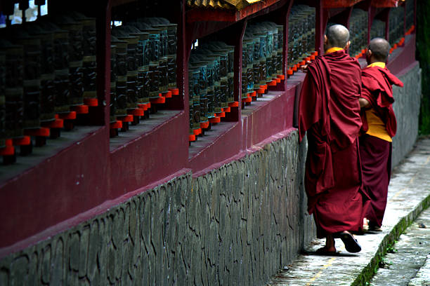

Rules and Regulations

- Respect people's privacy, always seek permission before taking their photographs.
- Dress modestly while visiting religious places and be aware of the customs and culture.
- Always travel with a local guide. Look for genuine travel guides who knows everything about the state.
- While trekking, always follow the designed path, do not interrupt the fragile vegetation.
- Do not litter in the forested areas, always carry back all the waste litter such as cans, plastic bags, empty bottles etc.
- Keep your identity card and passport with you at all times. You can also make copies of it in case needed.
- Be responsible and throw the waste in dustbin. Else, if it is not available, hold the waste in your pocket or bag till you see
a dustbin.
- After defecating in an open area during your trek, always cover with mud or sand and always keep in mind to excrete at least 100 metres from the river or any water source.
- Applying of sunscreen is a necessity to avoid sunburns and always carry sunglasses and hats while touring.
- While hiking, wear comfortable shoes since the trails can get rough at places.
- Avoid buying products made of endangered species or of any another animal.
- Smoking and drinking in sacred sites are restricted.
- Do not go near the waterfalls since there are chances to slip and hurt yourself.
- Do not scribble on trees, buildings, rocks etc.
- Plucking of flowers is not allowed and do not destroy any type of vegetation.
- It is advised not to use fuel in wood to cook food at the campsite.
- Do not disregard the food offered by the locals.
- Take proper permits and pay prescribed fees before entering restricted areas in Sikkim.
- Camp within 500 meters of the fringe of lakes or rivers.
- Disturbing or molesting wild animals are not allowed.
- Remember to register at the forest or wildlife check posts before entering for your safety.
- Don't play loud music inside the forested areas.
- It is not allowed to swim in the lakes, rivers or glaciers in the protected areas.
- Make sure to partake in festivals and witness the beautiful culture of the place.
- Drink sufficient amount of water to avoid dehydration while trekking.
- Make sure you are well aware of Restricted Area Permit and Protected Area Permit before visiting Sikkim.